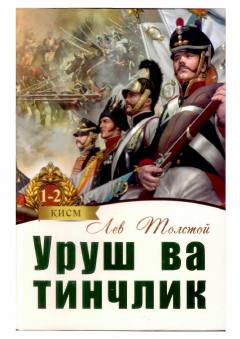

UVNapoleon urushlari davridagi Rossiya jamiyati va qahramonlar taqdiri haqidagi shoh asar.
Lev Tolstoyning ushbu epik romanida XIX asr boshlaridagi Rossiya hayoti, Napoleon urushlari va turli tabaqa vakillarining taqdiri tasvirlanadi. Asarda urush fojialari va tinch osmon ostidagi insoniy munosabatlar, ma'naviy izlanishlar chuqur tahlil etilgan. Ushbu nashr Abdulla Qahhor va Kibriyo Qahhorova tarjimasidagi 1 va 2-kitoblarni o'z ichiga oladi.